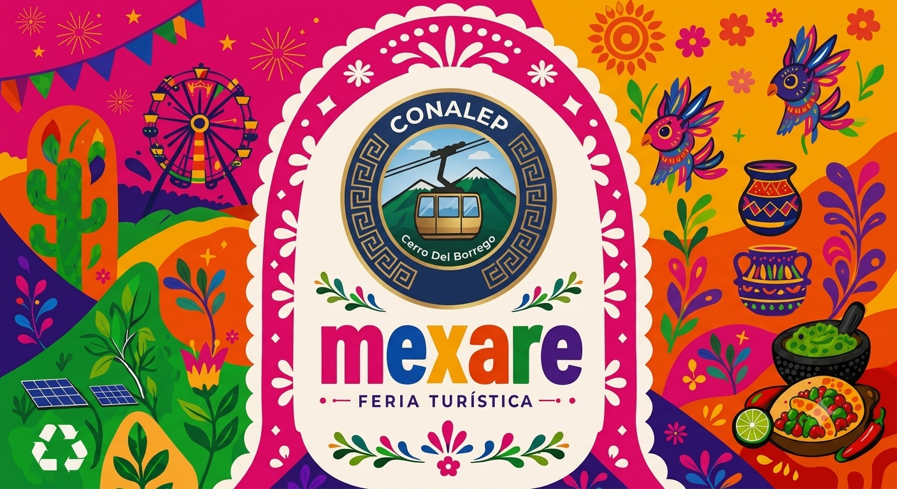
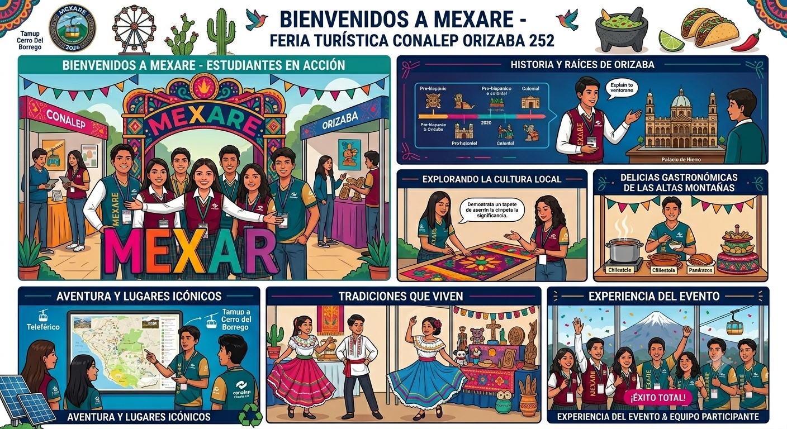

La Feria Turística MEXARE es un evento realizado por estudiantes donde se presentan propuestas relacionadas con el turismo, la cultura y las tradiciones.
El objetivo es compartir experiencias, promover lugares turísticos y mostrar proyectos creativos desarrollados por los alumnos.
Durante esta actividad se observan exposiciones, decoraciones temáticas y presentaciones culturales.
Este tipo de eventos desarrolla habilidades como trabajo en equipo, creatividad, organización y comunicación.
